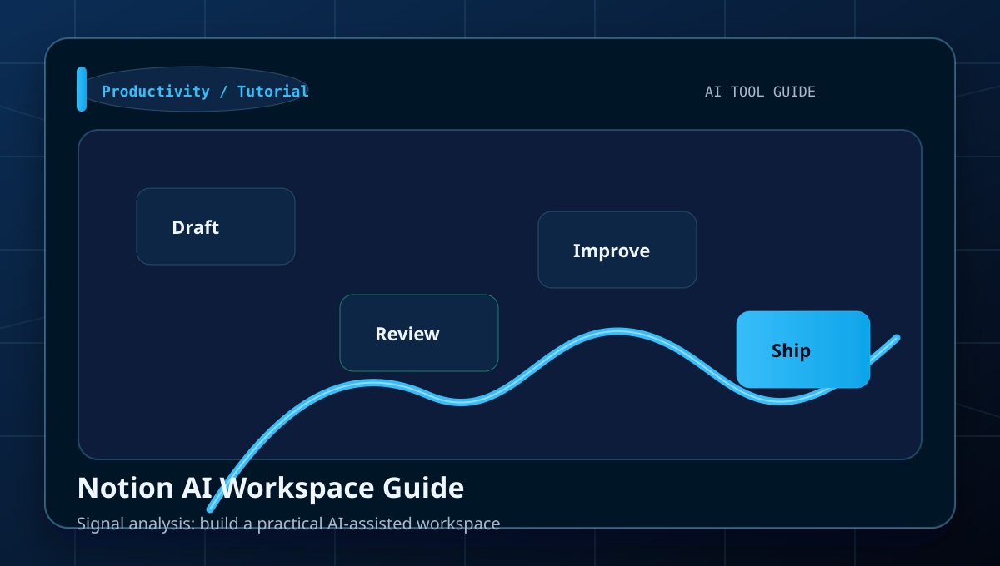
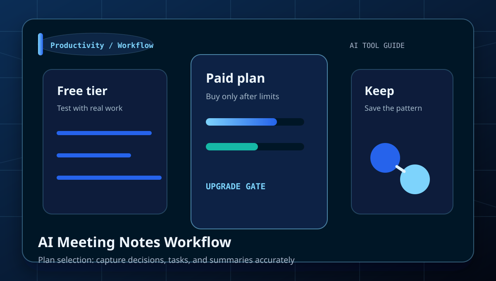
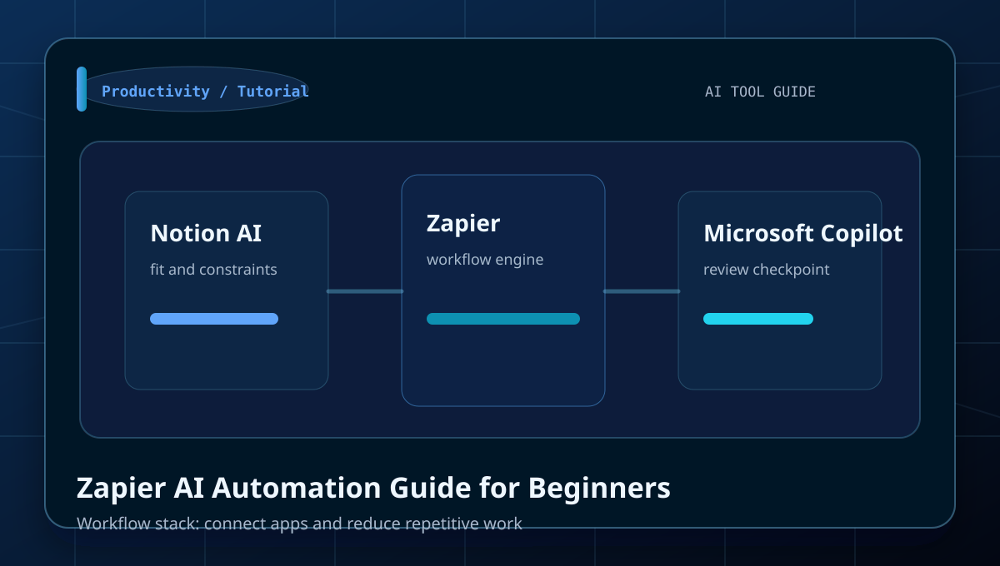
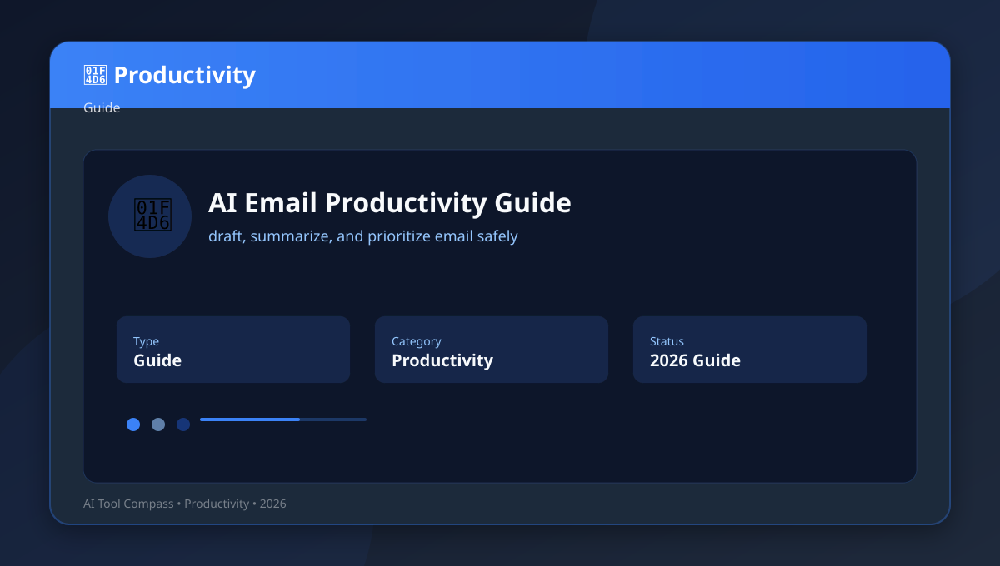
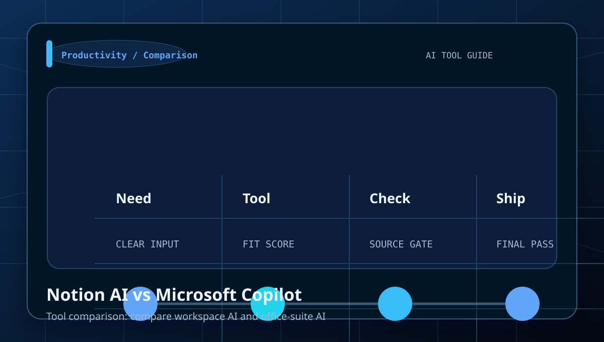
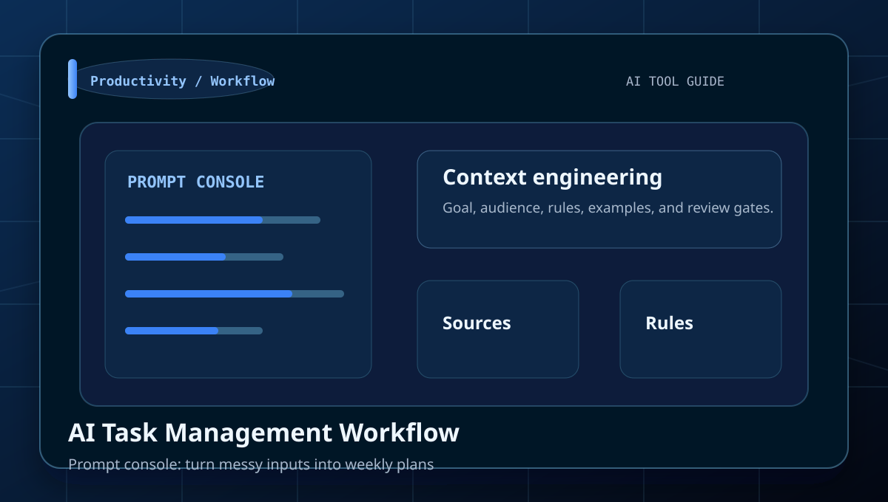
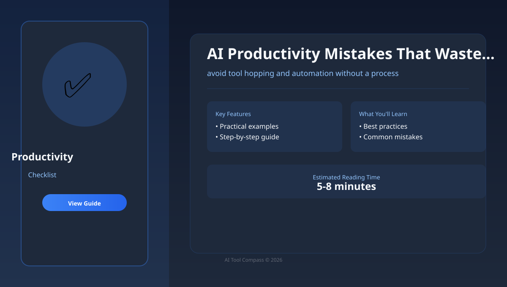
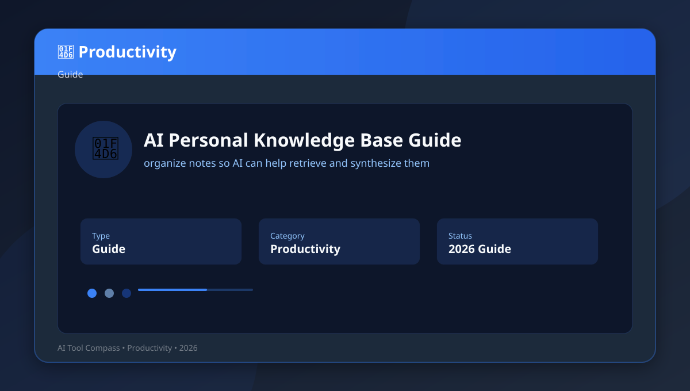

Category
AI Productivity Guides
Tutorials, comparisons, prompt examples, and beginner workflows for notes, meetings, automations, task systems, and team operating workflows.
Best for
notes, meetings, automations, task systems, and team operating workflows.
Notion AI, Zapier, Microsoft Copilot, Otter.ai
Use the comparison tables to decide which tool fits each job.
Library
All AI Productivity articles

Best AI Tools in 2026: Practical Beginner Guide
Learn how to choose a useful AI tool stack across chatbots, research, images, video, design, and productivity with a clear workflow,.

Notion AI Workspace Guide
Learn how to build a practical AI-assisted workspace with a clear workflow, examples, and beginner mistakes to avoid.

AI Meeting Notes Workflow
Learn how to capture decisions, tasks, and summaries accurately with a clear workflow, examples, and beginner mistakes to avoid.

Zapier AI Automation Guide for Beginners
Learn how to connect apps and reduce repetitive work with a clear workflow, examples, and beginner mistakes to avoid.

AI Email Productivity Guide
Learn how to draft, summarize, and prioritize email safely with a clear workflow, examples, and beginner mistakes to avoid.

Notion AI vs Microsoft Copilot
Learn how to compare workspace AI and office-suite AI with a clear workflow, examples, and beginner mistakes to avoid.

AI Task Management Workflow
Learn how to turn messy inputs into weekly plans with a clear workflow, examples, and beginner mistakes to avoid.

AI Productivity Mistakes That Waste Time
Learn how to avoid tool hopping and automation without a process with a clear workflow, examples, and beginner mistakes to avoid.

AI Personal Knowledge Base Guide
Learn how to organize notes so AI can help retrieve and synthesize them with a clear workflow, examples, and beginner mistakes to avoid.

AI Workflow Audit Template
Learn how to find the repetitive tasks worth automating first with a clear workflow, examples, and beginner mistakes to avoid.

Grok Connectors: Cross-App AI Workflows Are Getting Real
Connector rollouts matter only if they reduce copy-paste work without widening privacy, permissions, or review risk.

Gemini Notebooks for Complex Tasks: A Practical Take
Notebook-style AI becomes useful when persistent context beats one-shot chat for research, drafting, and multi-step decisions.

Alibaba Smart Studio: Easier Self-Hosted Model Workflows
Self-hosted AI platforms matter when data control, latency, and governance outrank consumer-style convenience.